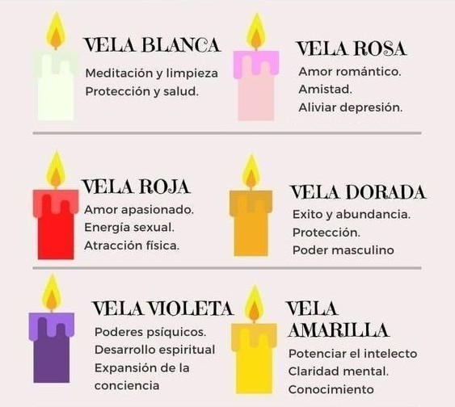
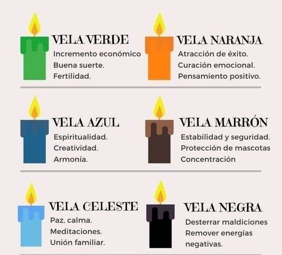

Velomancia
La velomancia es la adivinación mediante la lectura de las velas, interpretando el comportamiento del fuego,
el humo y la cera para obtener respuestas espirituales o evaluar la energía de un entorno. En la llama se analiza
como es la combustión de la vela. En la cera se analizan los restos y figuras acumuladas en la base al derretirse,
estos restos y figuras revelan mensajes ocultos o símbolos específicos. En el humo se analiza como se desprende,
este último, de la vela. Por último, el color de la vela elegido según la intención del paciente.
Color de la vela según el propósito:

